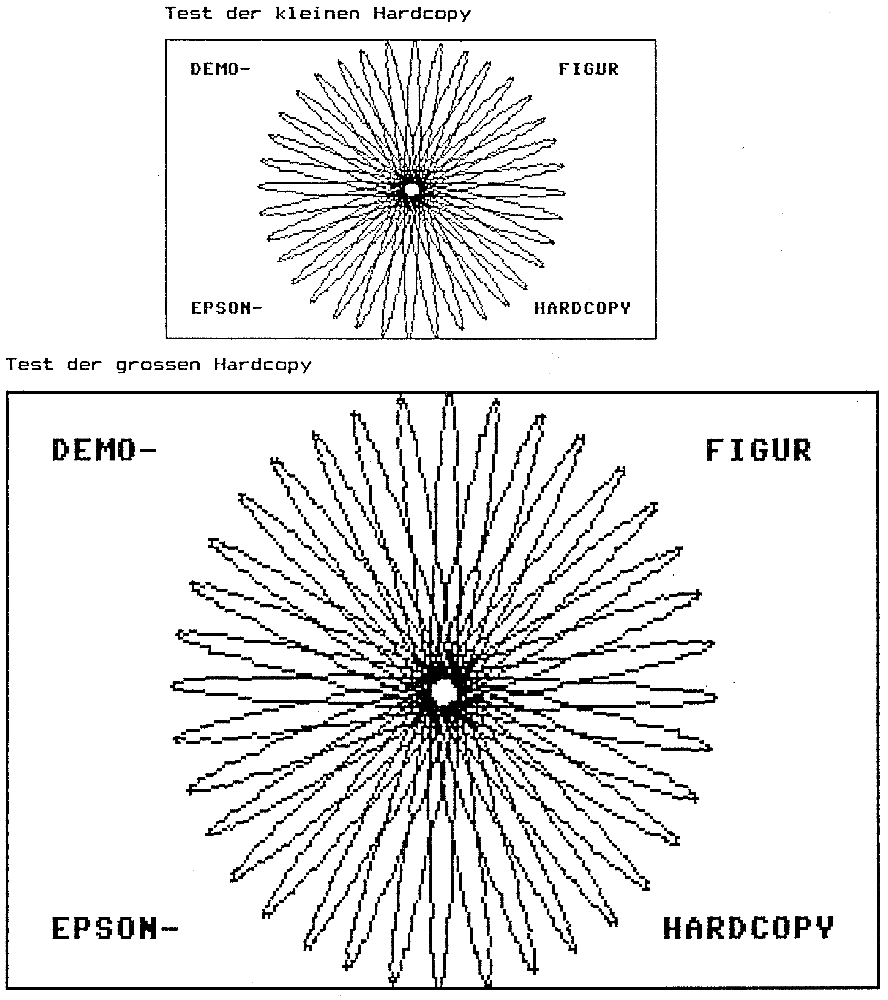

Centronics-Schnittstelle für den C 128
Wir machen kurzen Prozeß mit den Anschlußproblemen Ihres Druckers! Mit einem leicht herstellbaren Kabel und unserem Programm können Sie mit nahezu allen Druckern problemlos am C 128 arbeiten.
Der C 128 besitzt mit dem Basic 7.0 einen recht umfangreichen Befehlswortschatz, der auch die hochauflösende Grafikprogrammierung unterstützt. Doch was nützt die schönste Grafik auf dem Bildschirm, wenn man sie nicht auch auf einem Drucker ausgeben kann? Wenn Sie einen Drucker mit Centronics-Schnittstelle besitzen, gehören Sie zu den Menschen, die dieses Problem nicht länger betrifft. Der abgedruckte Druckertreiber enthält eine Routine zur Umwandlung von CBM-ASCII nach Standard-ASCII, so daß im Textmodus nun weiterhin auch die deutschen Umlaute wie jedes andere Zeichen verwendet und ausgedruckt werden können. CBM-Sonder- und Grafikzeichen können jedoch nicht auf dem Drucker realisiert werden. Es ist deshalb ratsam, derartige Zeichen in eigenen Listings als CHR$(Zeichen) darzustellen.
Der Centronics-Druckertreiber für den C 128 (Listing 1) liegt im freien RAM-Bereich von $1300 bis $17E3 und wird mit SYS 4864 aktiviert. Hierbei wird die Betriebssystemroutine zur Ausgabe von Zeichen auf den Treiber umgelenkt. Nach <RUN/STOP + RESTORE> oder einem Reset muß das Programm erneut aktiviert werden.
Das Treiberprogramm wird über die Sekundäradresse gesteuert. Bei Sekundäradresse Null wird der Text ohne ASCII-Wandlung ausgegeben; bei Sekundäradresse 1 bis 14 erfolgt eine Zeichensatzanpassung über eine 256 Byte lange Tabelle ($142a bis $1529), die auch nach eigenen Bedürfnissen angepaßt werden kann. Die Sekundäradresse 15 ist reserviert für die Ausgabe einer hochauflösenden Grafik. Durch Übertragung der Ziffern 1 oder 2 kann die Größe der Hardcopy bestimmt werden (siehe Beispiel-Listing 2 und Bild 1). Die größtmögliche Hardcopy (Ziffer 2) entspricht ungefähr DIN A5. Durch mehrstellige Ziffern kann die Hardcopy beliebig oft wiederholt werden. Vor jeder Hardcopy wird zur Druckjustage eine Leerzeile gedruckt.

Anpassungen
Abhängig vom Drucker oder der individuellen Anforderung des Benutzers, können einige Voreinstellungen des Treibers durch Modifikation, zum Beispiel mit dem eingebauten Maschinensprachemonitor, geändert werden. Die entsprechenden Speicherstellen und die Bedeutung der voreingestellten Inhalte sind nachfolgend beschrieben.
Speicherstelle $1303 (dezimal 4867):
In dieser Speicherstelle ist die Gerätenummer abgelegt. Der Ursprungswert ist #4. Soll ein Drucker mit der Gerätenummer #5 angesprochen werden, so muß der Inhalt dieser Adresse entsprechend geändert werden.
Speicherstelle $1304 (dezimal 4868)
Durch den Inhalt dieser Speicherstelle wird festgelegt, ob am Zeilenende Carriage Return (CR = Wagenrücklauf) gesendet wird (Inhalt = 0) oder Carriage Return mit Line Feed (LF = Zeilenvorschub) (Inhalt = 1). Voreingestellt ist CR und LF.
Speicherstellen $142a bis $1529 (dezimal 5162 bis 5417)
In diesem Speicherbereich befindet sich die Umwandlungstabelle für die Anpassung von CBM-ASCII nach Standard-ASCII. Die hier aufgeführten Werte werden bei Sekundäradresse ungleich Null anstelle der üblichen Codes an den Drucker gesendet. Zur Darstellung der Umlaute auf einem Epson-Drucker müssen die Codes über diese Tabelle gewandelt werden. Die richtigen Codes sind hierin bereits enthalten.
Speicherstellen $1540 bis $1544 (dezimal 5440 bis 5444)
Hier befindet sich die für Initialisierung der kleineren Standard-Hardcopy wichtige Escape-Sequenz:
1b 2a 04 40 01 (27, '*', 4, <320,>320)
Speicherstellen $1546 bis $154A (dezimal 5446 bis 5450)
In diesem Bereich ist die entsprechende Escape-Sequenz für die vergrößerte Hardcopy-Routine enthalten:
1b 2a 06 80 02 (27, '*', 6, <640, >640)
Speicherstelle $156f (dezimal 5487)
In diesem Register ist der Randabstand für die Standard-Hardcopy enthalten (Voreinstellung #20).
Speicherstelle $1570 (dezimal 5488)
Der Randabstand für die vergrößerte Hardcopy ist in dieser Speicherstelle mit #7 voreingestellt.
| A | GND | 16 |
| B | Flag-Busy | 11 oder |
| Flag-Acknowl. | 10 | |
| C | D0 | 2 |
| D | D1 | 3 |
| E | D2 | 4 |
| F | D3 | 5 |
| H | D4 | 6 |
| J | D5 | 7 |
| K | D6 | 8 |
| L | D7 | 9 |
| M | PA2-Strobe | 1 |
Wollen Sie einen Drucker anschließen, der keine Grafik-Hardcopy beherrscht, können Sie die Hardcopy-Routinen entfernen. Dazu ist in Adresse $1401 der Wert $0f (dezimal 15) in $10 (dezimal 16) zu ändern, und der Speicherbereich von $1300 (dezimal 4864) bis einschließlich $1529 (dezimal 5417) auf Diskette zu speichern. Auf diese Weise erhält man den reinen Druckertreiber ohne Hardcopy-Funktion.
Zum Anschluß eines Druckers mit Centronics-Schnittstelle wird ein Kabel mit Userport-Stecker und ein 36poliger Amphenol-Stecker benötigt. Als Kabel kann ein 11adriges Computer- oder ein 10adriges Fernmeldekabel mit Abschirmung verwendet werden. Die Länge des Kabels sollte 3 Meter nicht überschreiten. Die Kabel- beziehungsweise Pinbelegung können Sie Bild 2 entnehmen.
(G.M. Ritter/nj)